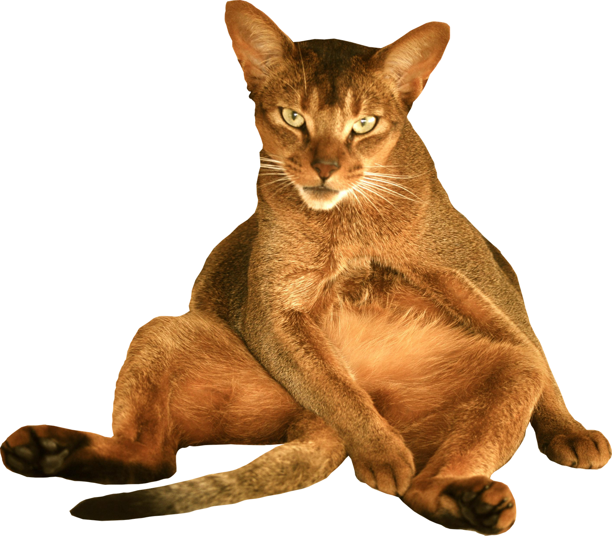

_____ _
/ ___| | |
\ `--. ___ _ _ _ __ __| |
`--. \/ _ \| | | | '_ \ / _` |
/\__/ / (_) | |_| | | | | (_| |
\____/ \___/ \__,_|_| |_|\__,_|
The ‘AA0011’ album is the result of some arbitrary experimentations with the Qwelk modules in VCVRack.
My field-recordings in Scotland, Japan and Iran makes everydaymeal.
Combs, Keys, Cicadas perhaps, Patu, N.E.W.S, ESX, Jar and nuPg makes Things.
- everydaymeal by Massimo Ricci, Touching Extremes
- everydaymeal by Hubert Heathertoe, Felthat
- Things by Jack Chuter, ATTN:Magazine
- Things by Jack Davidson, Noise Not Music
- Things by Alex Tripp, endaural
--------